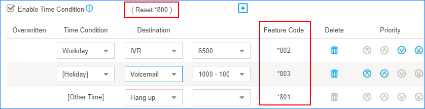
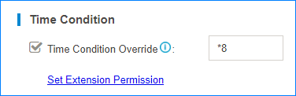

Time Condition Override
The Time Condition Override function is used to switch the incoming call routing against the Time Condition. An authorised user can dial Time Condition feature code to override the time condition.
For example, during office hours, incoming calls go to ring group; after office hours, incoming calls go to voicemail. Users can override the time condition to ring group if they are in the office after office hours.
Time Condition Feature Code
When you enable and add time condition on an inbound route, you will see the default generated feature code for the time condition. If you want to disable Time Condition Override, dial the Reset feature code.
You can go to to change the feature code prefix.

Set Extension Permission to Override Time Condition
By default, users have no permission to override time condition. You can set which extension users can override time condition.
- Go to , click Set Extension Permission.

- Select the desired extension from Available box to Selected box.
- Click Save and Apply.